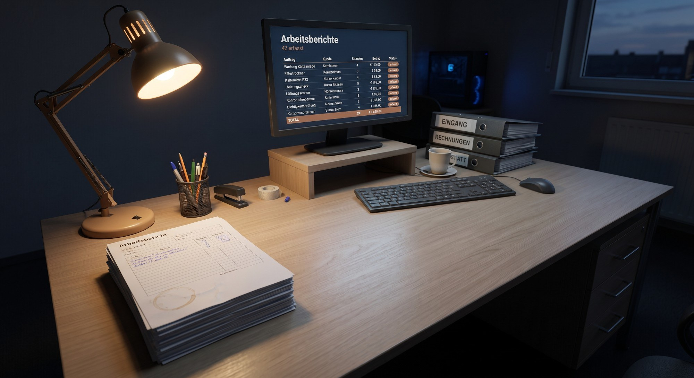

Digitalisierung und KI für Handwerksbetriebe in Mainfranken
Ihre Angebote entstehen abends um acht.
Das muss nicht so bleiben.
Ich komme einen Tag in Ihren Betrieb, spreche mit Ihren Leuten und zeige Ihnen, welche Abläufe sich automatisieren lassen. Was danach kommt, fördert der Freistaat Bayern mit bis zu 7.500 Euro.
Kommt Ihnen etwas davon bekannt vor?
- Die Angebote schreibt der Chef abends, weil tagsüber keine Zeit ist.
- Der Rapportzettel liegt drei Wochen im Auto, bevor er abgerechnet wird.
- Jeder weiß, wo die Preisliste liegt. Außer dem Neuen.
- Die Software könnte das eigentlich. Nur benutzt sie so keiner.
Das sind keine Softwareprobleme. Das sind Ablaufprobleme — und die lassen sich lösen, ohne dass Sie Ihr System wechseln müssen.

Ihre Aufschriebe waren nie das Problem. Sie standen nur an der falschen Stelle.
Schritt eins
Erst messen. Dann bauen.
Bevor irgendetwas gekauft oder programmiert wird, schaue ich mir an, wie in Ihrem Betrieb tatsächlich gearbeitet wird. Nicht wie es im Handbuch steht.
Was an diesem Tag passiert
- Ich bin einen Tag bei Ihnen im Betrieb
- Bis zu fünf Gespräche: Geschäftsführung, Büro, Meister, Monteur
- Eine anonyme Umfrage im Team, vorher online ausgerollt
- Aufnahme Ihrer Systeme: ERP, Zeiterfassung, Ablage, Schnittstellen
Was Sie danach haben
- Drei bis fünf konkrete Ansatzpunkte, nach Wirkung sortiert
- Für jeden: was er kostet und was er an Zeit zurückbringt
- Eine belastbare Einschätzung, ob und wie viel Förderung möglich ist
- Ein Gespräch, in dem wir alles in Ruhe durchgehen
1.900 Euro netto. Fester Preis, fester Umfang.
Wenn Sie nach dem Ergebnisgespräch sagen, das hat Ihnen nichts gebracht, zerreiße ich die Rechnung.
Ob Sie danach umsetzen, entscheiden Sie. Es gibt keine Verpflichtung und keine Anschlussgebühr.
Digitalbonus Bayern
Die Hälfte zahlt der Freistaat.
Bayern fördert Digitalisierungsprojekte in kleinen Betrieben mit 50 Prozent der Kosten, maximal 7.500 Euro.
Wer bekommt es
Gewerbebetriebe mit Betriebsstätte in Bayern, unter 50 Mitarbeitern und höchstens 10 Millionen Euro Jahresumsatz. Die allermeisten Handwerksbetriebe erfüllen das.
Wann Sie starten können
Sobald die Antragseingangsbestätigung da ist — nicht erst mit dem Bescheid. Das sind in der Regel Stunden, keine Wochen.
Worauf Sie achten müssen
Vor dieser Bestätigung darf nichts beauftragt werden, auch nicht mündlich. Sonst ist die Förderung weg. Deshalb ist die Reihenfolge so wichtig.
Es gibt ein Monatskontingent
Anträge sind erst ab dem ersten Werktag im Monat um 10 Uhr möglich, und die Zahl ist begrenzt. Wer beantragen will, sollte das Angebot vorher fertig haben.
Den Antrag stellen Sie selbst, über Ihr ELSTER-Unternehmenskonto. Das schreibt das Programm ausdrücklich so vor — Dienstleister dürfen das nicht übernehmen. Ich liefere Ihnen alle Unterlagen fertig zu und bin beim Ausfüllen dabei. Falls Sie noch kein ELSTER-Unternehmenskonto haben: Das dauert ein paar Tage, deshalb klären wir das früh.
- Projektvolumen
- 15.000 €
- − Digitalbonus
- 7.500 €
- = Ihr Anteil
- 7.500 €
Sie erhalten 50 Prozent Zuschuss.
Alle Beträge netto. Angaben nach digitalbonus.bayern, Stand August 2026. Keine Gewähr für die Bewilligung im Einzelfall.
So sieht das in Zahlen aus
Ein typisches Projekt: 15.000 Euro. Sie zahlen 7.500.
Angebotsprozess automatisieren
| Position | Betrag |
|---|---|
| Prozessdesign der Angebotsstrecke | 2.500 € |
| Aufbau der Angebotsautomatisierung inklusive ERP-Anbindung | 5.500 € |
| Digitale Anfragestrecke, integriert in die Auftragsabwicklung | 3.000 € |
| Erforderliche KI-Lizenzen für 18 Monate | 1.000 € |
| Schulung von Büro und Meistern | 2.000 € |
| Dokumentation und Übergabe | 1.000 € |
| Summe | 15.000 € |
| Digitalbonus | − 7.500 € |
| Ihr Anteil | 7.500 € |
Jedes Projekt wird anders geschnitten. Die Größenordnung ist typisch.
Was sonst noch häufig gebaut wird.
Wissen aus den Köpfen holen
Preislisten, Leistungsverzeichnisse, Normen und Herstellerdokus werden durchsuchbar. Der Neue findet in zehn Sekunden, was der Altgeselle im Kopf hat.
Baustelle und Abrechnung
Rapporterfassung direkt vor Ort, automatisch dem Auftrag zugeordnet, direkt in die Abrechnung. Keine Zettel mehr im Handschuhfach.
Disposition und Termine
Regelbasierte Einsatzvorschläge für die Monteurplanung und automatische Benachrichtigung der Kunden, wenn sich etwas verschiebt.
Ich verkaufe keine Software, an der ich mitverdiene. Und ich ersetze Ihr ERP nicht — ich baue darauf auf.
Zwei Wege, je nachdem wo Sie stehen.
Sie wollen erst wissen, ob sich das lohnt
Wir fangen mit dem Digital-Check an. Ein Tag im Betrieb, danach haben Sie eine Roadmap und eine belastbare Aussage zur Förderung. Ob Sie umsetzen, entscheiden Sie danach völlig frei.
1.900 € netto
Sie wissen schon, wo es klemmt
Dann setzen wir Analyse und Umsetzung in ein Projekt und beantragen den Digitalbonus dafür. Voraussetzung ist ein kostenloses Vorgespräch, damit ich das Angebot förderfähig aufsetzen kann.
ab 15.000 € netto · Ihr Anteil nach Förderung 7.500 €
Weg B ist unter dem Strich günstiger. Weg A kostet 1.900 Euro mehr — dafür müssen Sie sich vorher auf nichts festlegen.
Fragen
Wie viel Zeit kostet mich das?
Der Digital-Check kostet Sie einen Tag, verteilt auf mehrere kurze Gespräche. In der Umsetzung brauche ich pro Woche etwa eine Stunde von Ihnen.
Muss ich meine Software wechseln?
In der Regel nicht. Meistens kann Ihr System mehr, als heute genutzt wird — und was fehlt, lässt sich außenrum bauen.
Was, wenn die Förderung abgelehnt wird?
Bei sauber gestellten Anträgen ist das selten, aber ich kann es nicht garantieren — das Risiko liegt formal bei Ihnen. Deshalb besprechen wir vorher offen, was das im schlechtesten Fall bedeutet.
Sind meine Daten sicher?
Ihre Betriebsdaten verlassen den vereinbarten Rahmen nicht. Was wo verarbeitet wird, halten wir vor Projektstart schriftlich fest.
Was passiert nach dem Projekt?
Sie können alles selbst weiterbetreiben, die Dokumentation gehört Ihnen. Wenn Sie möchten, betreue ich es weiter.
Am schnellsten geht es telefonisch.
Rufen Sie an oder schreiben Sie kurz, worum es geht. Ein erstes Gespräch dauert fünfzehn Minuten und kostet nichts.